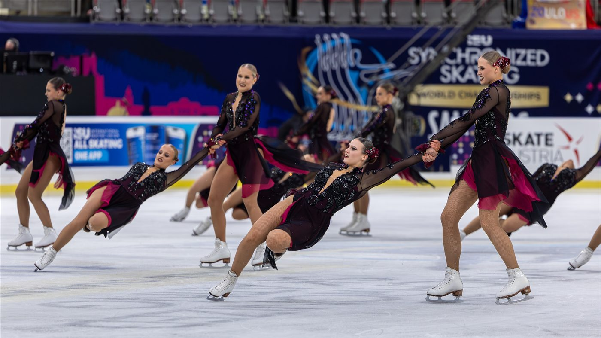
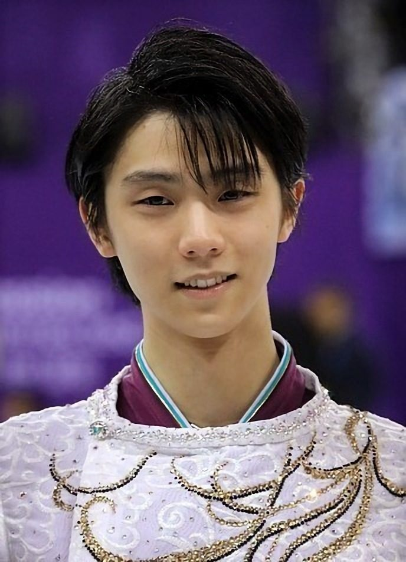
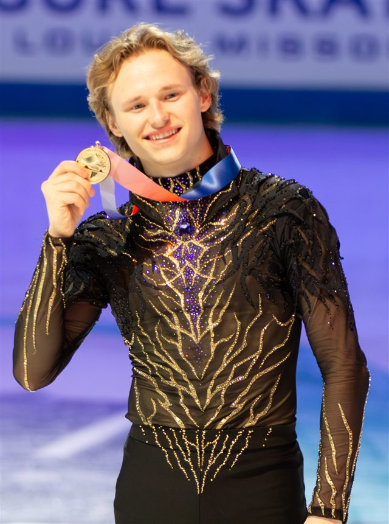
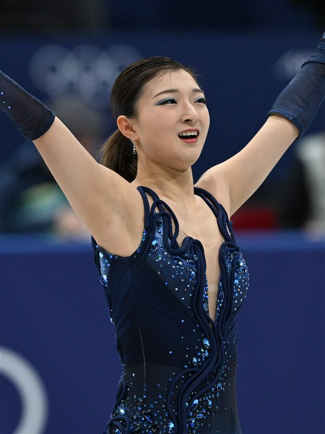
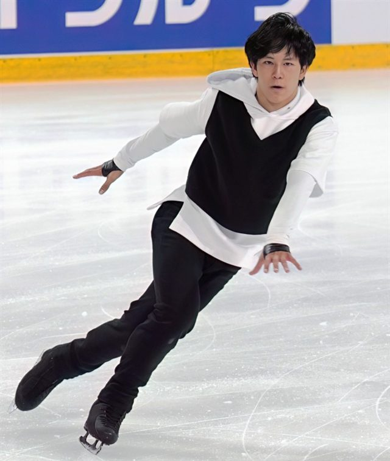
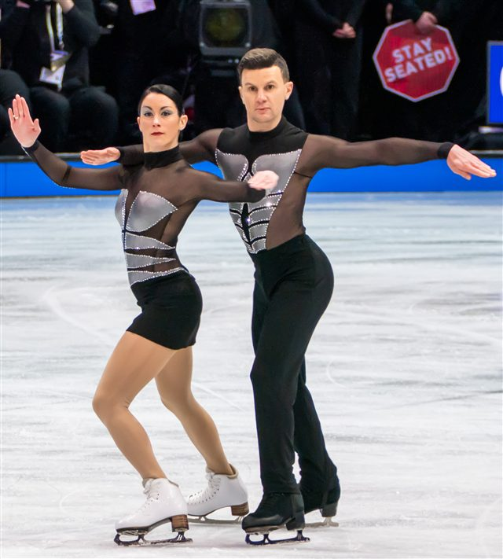
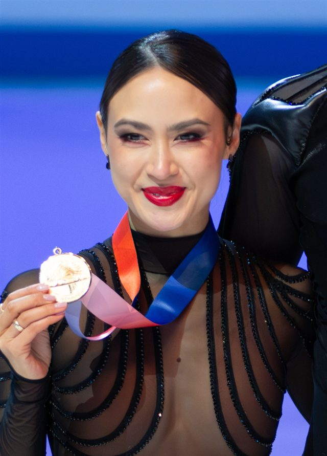

Les sauts
Axel, lutz, flip, boucle… Chaque saut a une valeur ; les quadruples rapportent le plus.

4 tours
Un saut quadruple
2
Programmes (court + libre)
5
Épreuves au programme
Le patinage artistique marie l'athlétisme et l'art : sur une musique, les patineurs enchaînent sauts vertigineux, pirouettes et pas de danse, jugés à la fois sur la technique et sur l'interprétation.
Chaque athlète présente deux programmes — un court et un libre — notés selon le système ISU : une note d'éléments techniques (chaque saut a une valeur de base) et une note de composantes (présentation, musicalité). Les sauts quadruples, à quatre rotations en l'air, sont devenus la norme chez les hommes.
L'Américain Ilia Malinin repousse les limites des quads, dans la lignée de la légende japonaise Yuzuru Hanyu.

Axel, lutz, flip, boucle… Chaque saut a une valeur ; les quadruples rapportent le plus.
Notées sur la vitesse, la position et le nombre de rotations sur place, sans se déplacer.
Un programme court imposé, puis un programme libre plus long : le cumul fait le classement.
Pas de sauts ni de portés haut perchés : tout est rythme, complicité et précision des pas.
Portés, vrilles lancées et sauts en miroir : la confiance entre partenaires est totale.
Score = éléments techniques + composantes artistiques, moins les déductions (chutes…).
Lieu
Mediolanum Forum, Assago — Milan
Capacité
≈ 12 700 places
Accès
Métro M2 — Assago Milanofiori Forum. Navette officielle depuis le Duomo.
Billet
À partir de 55 € · 220 € (programmes libres)
Ambiance
Peluches lancées sur la glace après chaque programme : une tradition unique.

 États-Unis
États-Unis
 Japon
Japon
 France
France
 Italie
Italie
États-Unis